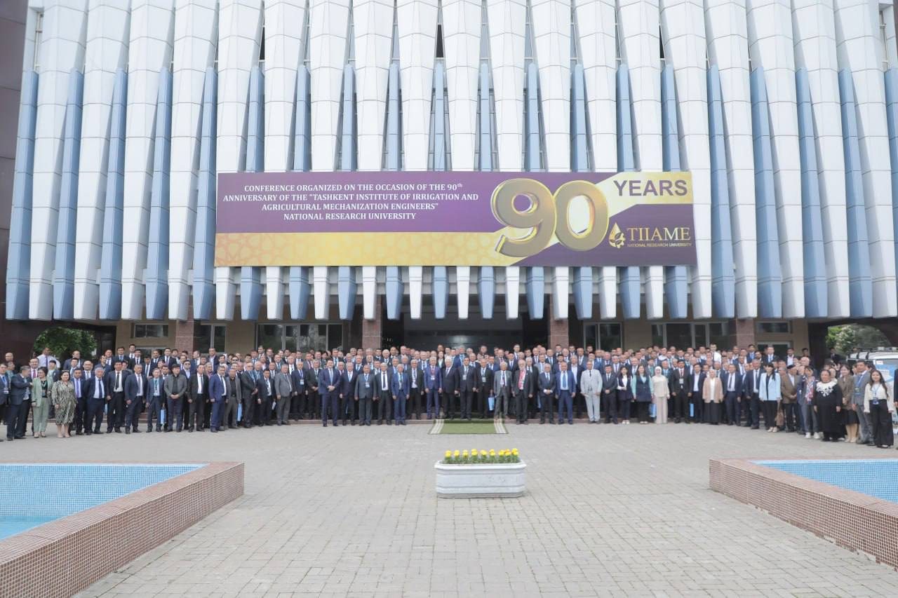
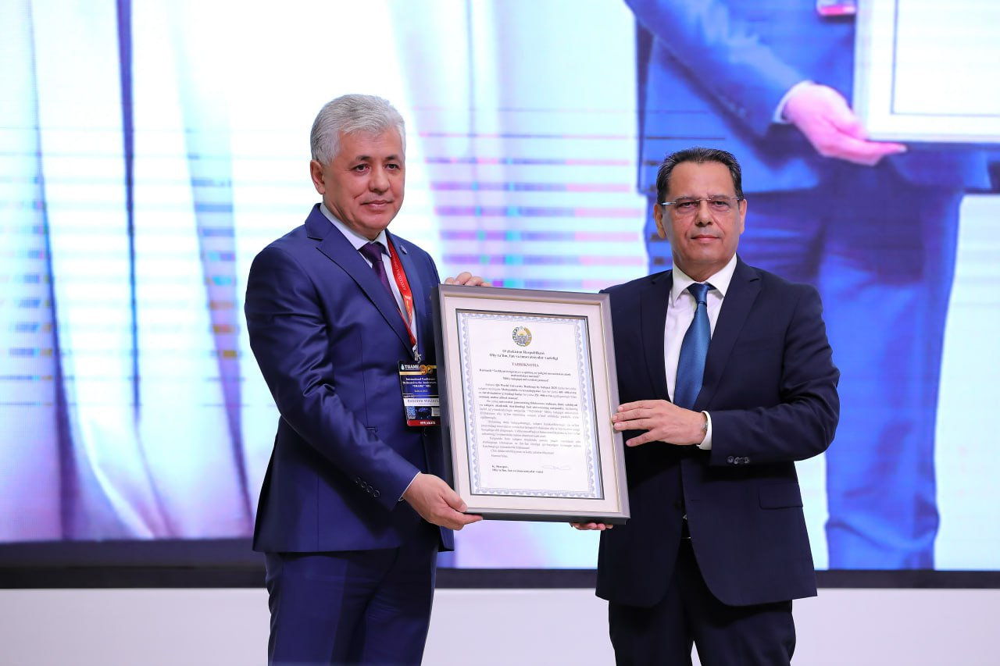
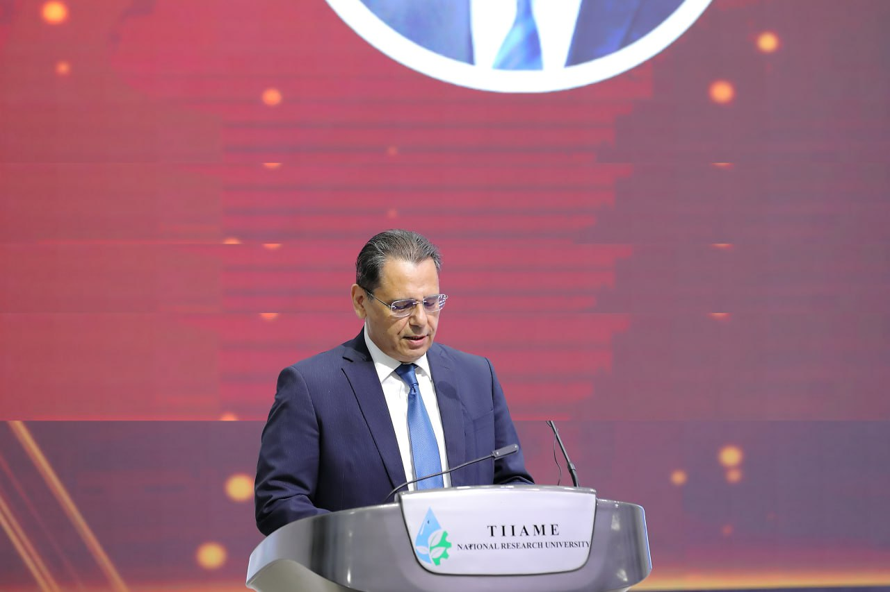

From engineering education in 1923 to national research university status.
Origins
1923: the beginnings
TIIAME’s history begins in 1923, with the establishment of an engineering land-reclamation faculty at the technical faculty of Turkestan State University. Its early graduates included 24 agronomists and 16 hydro-reclamation engineers.
The Central Asian Cotton Irrigation Polytechnic Institute was established in 1929. In 1934 it became the Tashkent Institute of Irrigation and Agricultural Mechanization Engineers. Reorganized in 2017, it gained national research university status in 2021.
The university’s research tradition in hydro-reclamation, irrigation, land reclamation and agricultural mechanization underpins its current teaching and research.
TIIAME’s history begins in 1923, with the establishment of an engineering land-reclamation faculty at the technical faculty of Turkestan State University. Its early graduates included 24 agronomists and 16 hydro-reclamation engineers.
Independent institute and historic building
The Central Asian Cotton and Irrigation Polytechnic Institute was established in 1929. In 1934 it took shape as an institute and moved into a purpose-built building on Niyozbek Street.
Institute of Irrigation and Land Reclamation
In 2004, the university was renamed the Tashkent Institute of Irrigation and Land Reclamation. Its academic programs and research later expanded.
Reforms and national research university status
Higher education reforms in 2017 began a new phase. Under Resolution PQ-42 of 7 April 2021, the university received National Research University status.
Present-day view of the historic building opened in 1934. Official source

At the 2025 international conference and anniversary event. Official source

At the 2025 international conference and anniversary event. Official source

At the 2025 international conference and anniversary event. Official source
The future of TIIAME
A new chapter focused on research, digital learning, international partnerships and water security.
Research
National research university
Resolution PQ-42 of 2021 set out the university’s development as a national research institution focused on innovation and digitalization, strengthening engineering education, research and industry links.
The Digital University platform, upgraded teaching laboratories, IT centre and artificial intelligence initiatives aim to expand learning and research.
Teaching and research in irrigation, water conservation, land reclamation and hydraulic engineering contribute to solutions for regional water and climate challenges.
Campus life, research partnerships and major national projects.
Education and science
Life lessons from a letter are being shared with students
Faculties at the National Research University “TIIAME” are holding educational meetings with the rector to share life lessons from a letter the President addressed to his grandson, Shavkatbek.
The rector explains the letter’s ideas through practical examples, highlighting learning, continuous self-development, thoughtful use of modern technology and artificial intelligence, foreign languages, and respect for national values.
Its calls to value every minute, set clear goals, and serve the country aim to strengthen young people’s sense of responsibility, confidence in the future, and commitment to Uzbekistan’s development.
The national research university trains specialists in irrigation, land reclamation and hydraulic engineering. In 2026 its team reviewed the installation of water-saving equipment and pipes in the Tashkent Region and issued recommendations.
On 10 March 2026, UzA reported that the university had more than 11,000 students, 7 faculties, 37 departments and 38 fields of study. O‘zA
Presidential Resolution PQ-42 gave the institute national research university status. It approved the creation of the Institute of Fundamental and Applied Research and a programme to modernise teaching laboratories.
The Water Management School opened at TIIAME on the president’s initiative. It provides farmers and water management specialists with practical training in water-saving technologies.
Shavkat Mirziyoyev and Kazakhstan’s President Kassym-Jomart Tokayev inaugurated the TIIAME branch in Almaty to train specialists in technical fields with high demand.
The president reviewed proposals for engineering education. The proposed dual model pairs four days of theory with two days of paid work experience each week. A proposal to expand the water diplomacy master’s programme and add government-funded places was approved.
The four-storey IT centre opened on 10 May 2025. It houses programming and training rooms, a registrar’s office, and a team that develops software for digital water management. Official source
UzA reported that on 15 December 2025 the president was briefed on the 200-seat IT centre, the digital library, and the registrar’s office. He called for specific measures to bring TIIAME into the world’s top 300 universities. O‘zA
IT centre buildingRibbon-cutting at the openingProgramming roomCooperation memorandum
He graduated from TIIAME in mechanical engineering in 1981 and worked there as a researcher, lecturer and vice-rector. He was elected president in 2016 and took office on 14 July after the 2023 election.
Irrigation development for 2025–2028The PQ–250 programme covers canal and facility upgrades, digital management and wider use of water-saving technology.
He was born on 24 July 1957 in Zaamin District, Jizzakh Region. He holds a Candidate of Technical Sciences degree and was an associate professor. He was confirmed as prime minister of Uzbekistan in 2003.
Selected projects built or modernized on the president’s initiative or commissioned at ceremonies he attended.
New Tashkent
New Tashkent’s new facilities
Seven facilities opened on 12 October 2026 at a ceremony attended by the president, including a school, Sohil Park, a substation and a trigeneration plant.
The project was presented to the president in 2021. It built 246 km of trunk and local pipelines. A February 2026 report said it supplies Termez and ten districts.
A public–private partnership installed energy-efficient pumps. The station irrigates 815 hectares. In 2025 the president instructed officials to expand the approach.
After a 2019 presidential directive, the dam was raised by 20 metres and two generating units were added. The upgrade was completed in 2023 and capacity reached 175 MW.